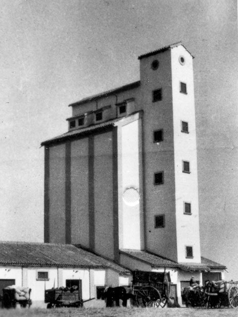

El siglo XX
Del sueño del ferrocarril a la llegada del agua corriente; de la paz firmada con Nava del Rey a la guerra civil; de la emigración que vació el pueblo a las primeras elecciones democráticas.
En esta página (8 apartados · 7 min de lectura)
En 1905 Alaejos tenía 3.584 habitantes. Cien años después tenía menos de la mitad. En medio queda un siglo intenso, que los programas de fiestas han ido contando a partir de las actas municipales, la prensa de la época y la memoria de los mayores.
Las fiestas de 1905
Adelio Castaño reconstruyó las fiestas de comienzos de siglo con los programas y las cuentas municipales (programa de 1984). Duraban del 7 al 10 de septiembre. El día 7, al amanecer, la banda municipal, dirigida por Máximo Reoyo Alonso, y las dulzainas recorrían las calles; desfilaban gigantes y enanos, había pelota en el frontón Alegría, en la Ronda del Castillo, y fuegos en la plaza o en el Arrabal. El día 8 el encierro salía a las cinco de la mañana por Tejares y Zabacos hasta la Plaza Mayor, que se cerraba como coso para 3.000 espectadores. Por la noche había teatro o baile en el Teatro Coliseo de la calle Zabacos. El último día, cucañas, carreras de niños y baile en el prado de Carrealvar o en la glorieta del Lavajo del Lugar.
Los programas traían los anuncios del comercio local: la ferretería de Celso Vázquez en la Ronda del Castillo, «El Porvenir» de Pedro Hernández e hijos en la Gargantilla, con trajes de caballero «desde 5 pesetas», la confitería de Gregorio Belloso en la calle del Pozo o la fábrica de aguardientes «La Alaejana» de Elías Martín Alonso. Francisco Santana llevaba a la gente a la ermita el día de la Casita por 50 céntimos, ida y vuelta.
El tren que no llegó
El ferrocarril había llegado a Nava del Rey en 1864, y Alaejos se quedó sin él. A partir de 1904 la Diputación estudió una línea de vía estrecha de Valladolid a El Cubo de Tierra del Vino que pasaría por Tordesillas, Rueda, La Seca, Nava, Alaejos, Fuentelapeña y Fuentesaúco. El alcalde Alfonso Mela se volcó en el proyecto: reunió a los alcaldes, ofreció el terreno gratis y en 1908, en un banquete en Fuentesaúco, prometió que «no se han de recoger dos cosechas sin que el ferrocarril sea un hecho». En 1913 se llegó a adjudicar la obra, que nunca se hizo (Noé León, programa de 2021).
El 29 de enero de 1912 apareció muerto de dos disparos el yerno del alcalde, Eduardo Burgos Muñiz. La prensa lo llamó «el crimen de Alaejos». Su esposa y el amigo de la casa fueron juzgados y absueltos, y la sentencia lo dio por suicidio; con el apellido Mela en entredicho, del ferrocarril «nunca más se supo».
Mela sí logró otra cosa: el reloj de la Casa Consistorial, contratado en febrero de 1904 «visto que el de la torre no rige bien» y fabricado por el palentino Moisés Díez. Hubo que darle cuerda a diario durante un siglo, hasta que el 11 de noviembre de 2005 lo sustituyó uno eléctrico (José Luis Pérez Muñoz, programa de 2007).
Carrealvar, el fuego y los bomberos
El 10 de mayo de 1916, día de la Casita, el Ayuntamiento celebró una sesión extraordinaria con un único asunto: hacerse cargo del prado de Carrealvar, que hasta entonces administraba la Sociedad de Labradores. Hubo un debate largo, porque el primer teniente de alcalde sostenía que el prado era de los labradores, que llevaban veinte años pagando su contribución. Al final el Ayuntamiento lo incorporó a los bienes municipales, por siete votos contra tres (Adelio Castaño, programa de 1981).
Los incendios eran un peligro constante en un pueblo de pajares y hogares abiertos. El 12 de junio de 1922 ardieron cuatro casas en la calle Fortaleza y Plaza, y el 22 de agosto de 1926 varias entre los números 34 y 64 de Casas Nuevas. El Cuerpo de Bomberos municipal se suprimió en 1930 por caro y el servicio se sacó a subasta (programa de 2010).
1928: la paz con Nava y la avioneta
La vieja rivalidad con Nava del Rey —que tenía el juzgado, el tren y desde 1877 el título de ciudad— llegó a principios de siglo a las peleas, a veces organizadas. Tantas hubo que intervino el gobernador civil. El 31 de mayo de 1928 los alcaldes de los dos pueblos firmaron en Nava, ante él, un acuerdo de paz, y el 9 de junio el gobernador vino a Alaejos para repetir el acto. El pueblo recibió a las autoridades de Nava con arcos de triunfo y colgaduras, y los alcaldes se dieron un abrazo. Noé León concluye que las rencillas no se acabaron, pero que se cambiaron «los puños por las palabras»: por los dichos y chascarrillos (programa de 2023).
Ese mismo año, el 23 de octubre, un biplano militar que volaba de Getafe a León tuvo que aterrizar de emergencia en el prado de Carrealvar. Cinco días después, ya «reparado» y tras una buena comida, intentó despegar desde el alto del Ortigal, chocó con los cables eléctricos y se estrelló contra el muro del cementerio. Los dos militares salieron heridos y los atendieron los médicos del pueblo, Segismundo Martín y Tomás Hernández (Javier Alonso Guinot, programa de 2014).
La República y la guerra civil
En 1936 el Ayuntamiento que presidía Antonio Losada Martín cambió el nombre de varias calles: la Plaza Mayor pasó a ser Plaza de la República, Zabacos se llamó Francisco Largo Caballero, Fortaleza y Plaza, Manuel Azaña, y la Ronda del Castillo, Pablo Iglesias. En 1938 la Comisión Gestora que presidía Primitivo Baena Cuadrado acordó renombrar casi todo el callejero, y la Plaza Mayor se convirtió en Plaza del Generalísimo. En 1993 el Ayuntamiento recuperó los nombres tradicionales (José Luis Pérez Muñoz, programa de 2009).
La guerra dejó muertos alaejanos en los dos bandos. Los maestros Juan Estebaranz y Esteban Domínguez no volvieron a la escuela en septiembre de 1936: los habían asesinado (Adelio Castaño, programa de 1991). En Madrid, el redentorista Donato Jiménez Bibiano, nacido en Alaejos en 1873 en la calle Casas Nuevas, fue asesinado por milicianos en la madrugada del 18 de septiembre de 1936 en Fuencarral; la Iglesia lo beatificó en 2022 (programa de 2025 y beatodonato.com).
La posguerra y la emigración
Hacia 1954 Alaejos seguía siendo un pueblo grande: el programa de aquel año le daba 850 vecinos y 3.950 habitantes, y una crónica de la época, 3.715. Producía trigo, centeno, cebada, legumbres y «buen vino»; tenía un coche de línea diario a Valladolid, dos coches de Renfe a Valladolid y Salamanca y dos grupos escolares con ocho maestros (programa de 1986).


.jpg){kind=link}
Después llegó, en palabras de José Ojeda Nieto, «la emigración más abundante que ha sufrido nunca el pueblo». En 1971 un alaejano escribía a un amigo ausente que el éxodo había sido «alarmante» (programa de 1971). A mediados de los años sesenta llegó el agua corriente, con el pozo de los Cantos del Cartero y el depósito, y con ella desaparecieron el aguador, el cañero y las colas en el Caño (véase Oficios, agua y vida diaria).
1979: el primer Ayuntamiento democrático
En las elecciones municipales de abril de 1979 fue elegido alcalde Adelio Castaño Casquero, el mismo que llevaba años escribiendo la historia de Alaejos en los programas. Veinte años después lo recordaba así: «Yo intenté el acercamiento entre todos, sin diferencias por ideología o posición socioeconómica y cultural». De aquel primer mandato, de 1979 a 1983, enumeraba la fachada del Ayuntamiento, la biblioteca, el puesto de la Cruz Roja, los Jardines de la Constitución de 1978, el empedrado de la plaza, las piscinas y las primeras obras del hospital del Buen Pastor, que luego sería el centro de salud. El 23 de febrero de 1981, el día del golpe de Estado, había reunión en el Ayuntamiento («Han pasado 20 años», programa de 1999).
Aquellos años fueron también los del rescate de la memoria local. En 1981 se rehabilitó el escudo de la villa y empezaron a publicarse, año tras año, artículos de historia local en los programas de fiestas. En 1997 la Junta de Castilla y León declaró el casco antiguo conjunto histórico.

.jpg){kind=link}
Para seguir leyendo
- En la biblioteca de los programas: Noé León, «El ferrocarril, un sueño. El suceso de Alaejos, una realidad» (2021) y «Acuerdo de paz entre Alaejos y Nava del Rey» (2023); Javier Alonso Guinot, «Anecdotario alaejano — año 1928» (2014); José Luis Pérez Muñoz, «Cambios en el callejero» (2009); José Sánchez Poncela, «Cronología de la historia postal. Historia de Correos» (2022).
- La declaración del conjunto histórico y el resto del patrimonio, en Patrimonio.